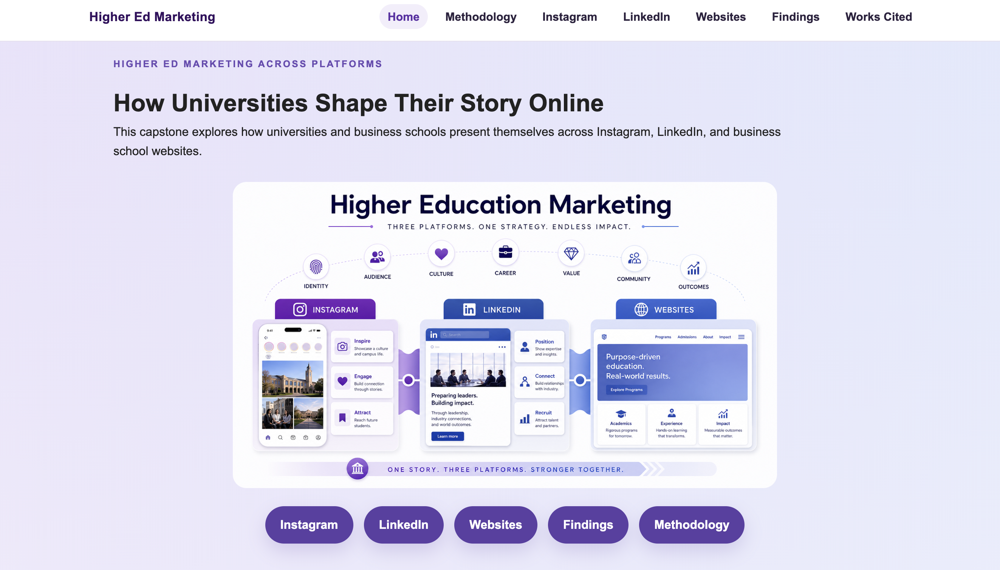
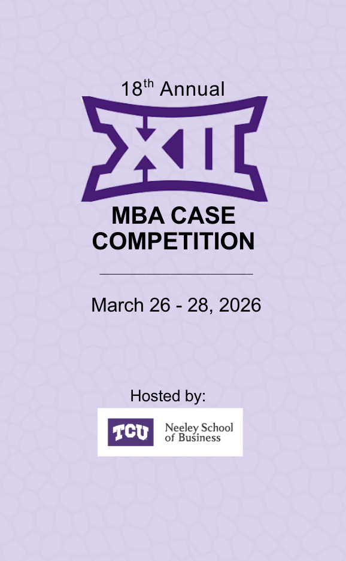

About Me
I support Graduate Career Management and Neeley & Associates at TCU's Neeley School of Business. I enjoy work that combines communication, organization, technology, and helping people connect with useful information and resources.
Through the DCDA program, I have developed skills in web design, JavaScript, data analysis, accessibility, and digital communication. This semester I also learned how to build interactive web applications, save and organize user data, and publish my work with GitHub Pages.
WRIT 40363 Projects
These four projects show my progression through WRIT 40363, from building my first portfolio to creating interactive JavaScript applications.
-
Project 1: Personal Portfolio
My first project was a responsive personal portfolio built with HTML and CSS. It gave me a place to practice semantic HTML, responsive layouts, accessibility, and organizing information for an online audience.
This original version also became the starting point for the revised portfolio I created at the end of the course.
Technologies: HTML, CSS, Flexbox, Grid, GitHub Pages
-
Project 2: Local Favorites Tracker
I created a web app for saving and organizing favorite local places. Users can add favorites, search and filter them, delete places, and keep their information after refreshing the page.
This project helped me become more comfortable working with JavaScript, arrays, forms, DOM manipulation, and localStorage.
Technologies: HTML, CSS, JavaScript, localStorage
-
Project 3: Personal Data Dashboard
I built a personal data dashboard that combines several small widgets into one page. It includes weather data, daily quotes, and a light and dark theme that saves the user's preference.
This project gave me more experience working with JavaScript, JSON, Fetch, and creating an interface that presents different kinds of information clearly.
Technologies: HTML, CSS, JavaScript, JSON, Fetch API, localStorage
-
Project Zed: Task Tracker
I created a Task Tracker to help organize multiple projects, tasks, and deadlines. Users can create projects, add tasks and details, track deadline status, complete projects, and keep their information saved between visits.
My new technique for this project was using JavaScript dates to compare deadlines and automatically organize tasks as Past Due, Due Today, In Process, or Completed.
Technologies: HTML, CSS, JavaScript, Date objects, localStorage
Skills
-
HTML
Semantic page structure, forms, navigation, links, images, and accessible content.
-
CSS
Responsive layouts, Flexbox, Grid, media queries, color, spacing, and visual design.
-
JavaScript
Events, arrays, functions, DOM manipulation, filtering, sorting, and interactive features.
-
Data
Working with JSON, Fetch, data organization, analysis, and visual presentation.
-
Accessibility & UX
Semantic HTML, labels, alt text, keyboard focus, color contrast, and responsive design.
-
Git & GitHub
Version control, commits, repositories, GitHub Desktop, and deployment with GitHub Pages.
-
AI-Assisted Development
Using AI for brainstorming, troubleshooting, learning new techniques, and improving code while testing and understanding the work I use.
-
Digital Communication
Organizing information and combining writing, visual design, and technology for different audiences.
Additional Work
-
Higher Ed Marketing Across Platforms

Built a capstone website examining how universities and business schools present themselves across Instagram, LinkedIn, and their websites.
-
Big 12 Case Competition Program

Designed a program in Canva for the 18th Annual Big 12 MBA Case Competition hosted by TCU Neeley. I organized event information into a polished visual guide for participants and guests.
Contact
You can reach me by email or connect with me through LinkedIn and GitHub.